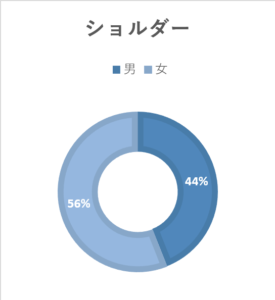

調査対象：バック
調査場所
📍移動観察：MMC～はまみらいウォーク
📍定点観察：はまみらいウォーク、MMC
観察の方法
- スマホでの動画・写真撮影、カウンターでの計測
観察の焦点
鞄の形状や大きさに焦点を当てる。どれくらい入れているのか。おおよその年代や職業も観察
観察結果の予想
オフィス街なので男性のほうが多いのではないか
→リュックが多い？
大学もある
→リュックやトやトートバックが多いのでは？
観察結果
男性の観察結果
【男性】
📍移動観察
リュック: 27
トート: 11
ショルダー: 8
ビジネスバック: 8
その他: 10
📍定点観察
リュック: 128
トート: 30
ショルダー: 38
ビジネスバック: 24
その他: 53
📍大学定点
リュック: 48
トート: 11
ショルダー: 7
ビジネス: 1
その他: 14
女性の観察結果
【女性】
📍定点
リュック: 61
トート: 101
ショルダー: 83
ビジネス: 0
その他: 24
📍大学定点
リュック: 27
トート: 24
ショルダー: 14
ビジネスバック: 0
その他: 4
📍移動
リュック: 9
トート: 28
ショルダー: 16
ビジネス: 0
その他: 8
| 分類 |
移動観測 |
定点観測 |
大学下観測 |
| リュック |
約74人（約40%） |
約188人(約38%) |
約74人(約46%) |
| ショルダーバッグ |
約38人(約20%) |
約117人(約24%) |
約32人(約20%) |
| トートバッグ |
約34人(約18%) |
約87人(約18%) |
約33人(約21%) |
| ビジネスバッグ |
約19人(約10%) |
約33人(約7%) |
ー |
| その他 |
約23人(約12%) |
約62人(約13%) |
約21人(約13%) |
| 合計 |
計188人 |
計487人 |
計160人 |
それぞれの男女比
📍移動観察
📍定点観察
📍大学定点

考察
予想の通り、男性が多かった。またオフィス街であったため20代から50代の方が多かったように見える。
しかし予想外であったのが、バックを持っていない人が一定数いたことであった。
これは観察時間帯がオフィス街のランチタイム後であったことから、ランチに行った周辺に勤める会社員はバックを社内において出かけたということが考えられる。
また時間帯的に学生よりも40,50代の女性が多く、予想に反してハンドバックが意外といた。
これは観察の時間帯によって世代や職業が変化するので、それに応じてバックの種類も変化すると考えられる。
また大学下で行った定点観察では、大学生ならではの持ち物(PCや教科書ノートなど)があったため比較的大きめのバックが多かった傾向があったと考えらえる。
感想
実際に実施して反省点も多かった。例えば定点観察の時間が短く、早く終わってしまったため、大学下でも再度実施した。
結果としては違いが見られたのでよかったが、もう少し計画的に行えばよかったと後悔している部分もある。